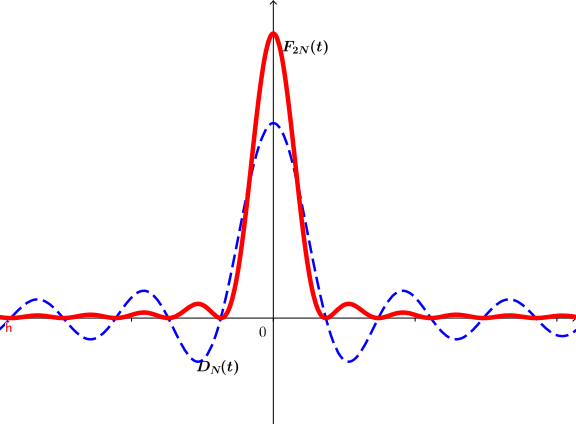
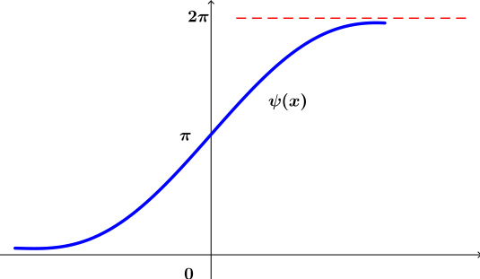

2.7. Fejer Serileri
Kayıt Tarihi:
Son Güncelleme:
Fourier serilerinin yakınsaklıkları konusunda bazı sıkıntılar olduğunu önceki bölümlerde gördük. Mesela sürekli fonksiyonların bile Fourier serileri sonsuz sayıda noktada ıraksak olabilir, başka bir sıkıntı da Gibbs olgusu. Fourier serileri yerine bunların kısmi toplamlar dizilerinin Cesaro ortalamaları alınarak oluşturulan serilerde bu sıkıntıların oluşmadığı Lipot Fejer tarafından keşfedilmiş.
Anahtar Kelimeler: Cesaro ortalaması · fejer serisi · Fourier serisi · Gibbs olgusu · yakınsaklıkBir fonksiyonun Fourier serisinin yakınsaklığı konusunda önemli iki mesele var, birincisi fonksiyon sürekli olsa bile Fourier serisi sonsuz noktada ıraksak olabilir, ikincisi de Gibbs olgusu. Her iki sorun da 1904 yılında Lipot Fejer (1880-1959) tarafından geliştirilen bir yöntemle giderilmiştir, Bu bölümde Fejer'in yöntemini inceleyeceğiz.
Şimdi $s_0:=a_0/2$ olarak tanımlayalım ve (2.4.1) ile tanımlanan $s_n(x)$ dizisi için $f$ fonksiyonunun Fejer toplamı $$\sigma_N(x):=\frac{1}{N+1}\sum_{n=0}^{N}s_n(x)$$ olarak tanımlansın. Bu durumda verilen bir fonksiyona yaklaşmak için $\left(s_n(x)\right)$ dizisi yerine $\left(\sigma_n(x)\right)$ dizisini kullanacağız.
Öncelikle $D_0:=1$ olarak tanımlarsak Lemma 2.4.1 ile verilen (2.4.5) eşitliğinin $n=0$ için de geçerli olduğunu gözlemlersek ve \begin{equation} \label{eq:fejer-kernel} \tag{2.7.1} F_N(t):=\frac{1}{N+1}\sum_{n=0}^{N}D_n(t) \end{equation} Fejer çekirdeğini tanımlarsak $$\sigma_N(x)=\frac{1}{N+1}\sum_{n=0}^{N}\frac{1}{2\pi}\int_{-\pi}^{\pi}f(t)D_N(t-x)\,dt=\frac{1}{2\pi}\int_{-\pi}^{\pi}f(t)F_N(t-x)\,dt$$ eşitliğinin sağlandığını görürüz. Sıradaki lemma ile Fejer çekirdeğinin bazı özelliklerini elde edeceğiz.
Lemma 2.7.1
$F_N(t)$ Fejer çekirdeği için aşağıdakiler sağlanır.- Eğer $t\neq0$ ise \begin{equation} \label{eq:fejer-kernel-2} \tag{2.7.2} F_N(t)=\frac{1}{N+1}\frac{\sin^2\frac{1}{2}(N+1)t}{\sin^2\frac{1}{2}t} \end{equation} eşitliği sağlanır.
- \begin{equation} \label{eq:fejer-kernel-1} \tag{2.7.3} \int_{0}^{\pi}F_N(t)\,dt=\pi. \end{equation}
- $0<\delta<\pi$ koşulunu sağlayan her $\delta$ sayısı için \begin{equation} \label{eq:fejer-kernel-3} \tag{2.7.4} \lim\limits_{N\rightarrow\infty}\int_{\delta}^{\pi}F_N(t)\,dt=0 \end{equation} eşitliği sağlanır.
İspat: Dirichlet çekirdeğinin tanımı gereği $$F_N(t)=\frac{1}{(N+1)\sin\frac{1}{2}t}\sum\limits_{n=0}^{N}\sin\left(n+\frac{1}{2}\right)t$$ yazılabilir. Sağ taraftaki toplamı düzenlemek için $$2\sin\frac{1}{2}nt\sin\frac{1}{2}t=\cos\frac{1}{2}(n-1)t-\cos\frac{1}{2}(n+1)t$$ özdeşliğinde $n=1,3,\ldots,2N+1$ yazarak elde edilen eşitlikleri taraf tarafa toplarsak $$\left(2\sin\frac{1}{2}t\right)\left[\sin\frac{1}{2}t+\sin\frac{3}{2}t+\cdots+\sin\left(N+\frac{1}{2}\right)t\right]=1-\cos(N+1)t=2\sin^2\frac{1}{2}(N+1)t$$ eşitliği elde edilir. Böylece $t\neq0$ için $$\sum\limits_{n=0}^{N}\sin\left(n+\frac{1}{2}\right)t=\frac{\sin^2\frac{1}{2}(N+1)t}{\sin\frac{1}{2}t}$$ elde edilir ve \eqref{eq:fejer-kernel-2} eşitliği kanıtlanmış olur. Eğer Lemma 2.4.1 ile verilen ve $D_0$ için de geçerli olan (2.4.4) eşitliğini kullanırsak $$\frac{1}{2\pi}\int_{0}^{\pi}F_N(t)\,dt=\frac{1}{N+1}\sum\limits_{n=0}^{N}\frac{1}{2\pi}\int_{0}^{\pi}D_N(t)\,dt=\frac{1}{N+1}\sum\limits_{n=0}^{N}\frac{1}{2}=\frac{1}{2}$$ olduğunu görürüz ve böylece \eqref{eq:fejer-kernel-1} eşitliği da kanıtlanmış olur. Son olarak, $0<\delta<\pi$ için $\sin^2\frac{1}{2}t$ fonksiyonunun $[\delta,\pi]$ aralığındaki minimum değeri $\sin^2\frac{1}{2}\delta$ olur ve \eqref{eq:fejer-kernel-2} eşitliği kullanılarak $$\left|\int_{\delta}^{\pi}F_N(t)\,dt\right|<\int_{\delta}^{\pi}\frac{1}{(N+1)\sin^2\frac{1}{2}\delta}dt=\frac{\pi-\delta}{(N+1)\sin^2\frac{1}{2}\delta}$$ olduğu görülür ve böylece \eqref{eq:fejer-kernel-3} eşitliğinin sağlandığı görülmüş olur.$$\tag*{$\blacksquare$}$$
Şimdi artık sürekli bir fonksiyonun Fejer toplamının o fonksiyona yakınsak olduğunu kanıtlayabiliriz.
Teorem 2.7.1
$f:\mathbb{R}\rightarrow\mathbb{R}$ fonksiyonu $2\pi-$periyodik ve $(-\pi,\pi)$ aralığında integrallenebilir olsun. Bu durumda $f(x-)$ ve $f(x+)$ limitlerinin mevcut olduğu her $x\in\mathbb{R}$ noktasında $\left(\sigma_n(x)\right)$ Fejer toplamları dizisi $$\frac{1}{2}\left[f(x+)+f(x-)\right]$$ değerine yakınsar. Özel olarak eğer $f$ fonksiyonu $x$ noktasında yakınsak ise $\sigma_n(x)\rightarrow f(x)$ olur, ayrıca $f$ fonksiyonu $[-\pi,\pi]$ aralığında sürekli ise bu aralıkta $\sigma_n(x)\rightrightarrows f(x)$ olur.
İspat: $f(x+)$ ve $f(x-)$ limitleri mevcut olsun. (2.4.6) eşitliği gereği
\begin{eqnarray*}
\sigma_N(x) &=& \frac{1}{N+1}\sum\limits_{n=0}^{N}\frac{1}{2\pi}\int_{0}^{\pi}\left[f(x+t)+f(x-t)\right]D_N(t-x)\,dt\\
&=& \frac{1}{2\pi}\int_{0}^{\pi}\left[f(x+t)+f(x-t)\right]F_N(t-x)\,dt
\end{eqnarray*}
yazılabilir. Buradan da \eqref{eq:fejer-kernel-1} eşitliğini kullanarak $$\sigma_N(x)-\frac{1}{2}\left[f(x+)+f(x-)\right]=\frac{1}{2\pi}\int_{0}^{\pi}\left[f(x+t)+f(x-t)-f(x+)-f(x-)\right]F_N(t-x)\,dt$$ elde edilir. Şimdi $$g_x(t):=f(x+t)+f(x-t)-f(x+)-f(x-)$$ olarak tanımlayalım. $f(x+)$ ve $f(x-)$ limitleri mevcut olduğundan, keyfi bir $\epsilon>0$ sayısı verildiğinde $0
Fejer'in bu teoreminin çok sayıda önemli sonuçları vardır, aşağıda bunlardan bazılarını vereceğiz.
Sonuç 2.7.1
$f:(-\pi,\pi)\rightarrow\mathbb{R}$ integrallenebilir bir fonksiyon olsun. Eğer $f$'nin $(-\pi,\pi)$ aralığındaki Fourier serisi $f$'nin sürekli olduğu bir $x$ noktasında bir sayıya yankınsıyor ise bu sayı $f(x)$ sayısıdır.
İspat: $s_N$ ve $\sigma_N$ ile $f$ fonksiyonunun sırasıyla Fourier ve Fejer serilerinin kısmi toplamlar dizilerinin $N-$inci terimlerini gösterelim. $f$ fonksiyonu $x$ noktasında sürekli olsun ve $s_N(x)\rightarrow s$ olsun, bu durumda $\sigma_n(x)\rightarrow s$ olduğunu göstereceğiz. $s_N(x)\rightarrow s$ olduğundan, keyfi bir $\epsilon>0$ verildiğinde $n\geq K(\epsilon)$ için $|s_n(x)-s|<\epsilon$ olacak şekilde bir $K(\epsilon)\in\mathbb{N}$ vardır. Bundan dolayı eğer $N\geq K(\epsilon)$ ise \begin{eqnarray*} \left|\sigma_N(x)-s\right| &=& \left|\frac{s_0(x)+s_1(x)+\cdots+s_N(x)}{N+1}\right|\\ &=& \left|\frac{[s_0(x)-s]+[s_1(x)-s]+\cdots+[s_N(x)-s]}{N+1}\right|\\ &\leq& \frac{\left|s_0(x)-s\right|+\cdots+\left|s_N(x)-s\right|}{N+1}\\ &<& \epsilon \end{eqnarray*} elde edilir ki böylece ispat tamamlanır.$$\tag*{$\blacksquare$}$$
Sonuç 2.7.2
$f,g:(-\pi,\pi)\rightarrow\mathbb{R}$ integrallenebilir ve sürekli iki fonksiyonun $(-\pi,\pi)$ aralığındaki Fourier serileri aynı ise bu durumda $f\equiv g$ olur.İspat: Teorem 2.7.1 ve Sonuç 2.7.1 gereği eğer $\sigma_N(x)\rightarrow f$ ve $\sigma_N(x)\rightarrow g$ ise $f\equiv g$ olacağı açıktır.$$\tag*{$\blacksquare$}$$
Şimdi de Fejer serilerinde Gibbs olgusunun neden oluşmadığını açıklayalım. Öncelikle $D_N$ Dirichlet çekirdeğinin tanımı ve \eqref{eq:fejer-kernel-2} eşitliğinin doğrudan bir sonucu olan $$(2N+1)F_{2N}=D_N^2$$ eşitliğini gözlemleyelim. Bu eşitlikten de anlaşılacağı gibi $F_{2N}$ fonksiyonunun yaprakları $D_N$ fonksiyonundakinin aksine pozitiftir ve $x-$ekseninin üzerindedir, dolayısıyla altında kalan alan monoton artarak yakınsar. Halbuki Dirichlet çekirdeği negatif ve pozitif değerler arasında salındığı için yakınsamada monotonluk yoktu ve Gibbs olgusunun temel nedeni buydu.
 Şekil 2.9: Dirichlet ve Fejer çekirdekleri
Gerçekten bir önceki bölümdeki düşünüşle $$\sigma_N(x)=\int_{0}^{x}F_N+\pi+\int_{\pi-x}^{\pi}F_N$$ eşitliği elde edilebilir. Sıfıra yakın $x$ değerleri için yukarıdaki son integralin integrasyon aralığı orijini içermediğinden $\delta:=\pi-x$ tanımı yapılırsa Lemma 2.7.1 ile verilen \eqref{eq:fejer-kernel-3} eşitliği gereği $$\sigma_N(x)\approx\int_{0}^{x}F_N+\pi$$ sonucuna varılır. Yıkarıdaki ifadenin sağ tarafını $\psi$ olarak tanımlarsak şunları söyleyebiliriz. Fejer çekirdeği \eqref{eq:fejer-kernel-2} eşitliği (veya doğrudan $(2N+1)F_{2N}=D_N^2$ eşitliği) gereği negatif olmadığından $\psi(x)$ fonksiyonu artandır. Ayrıca $N$ sayısı büyüdükçe $\psi(x)$ değerleri $x<0$ için sıfıra, $x>0$ için de $2\pi$ sayısına yaklaşır.
 Şekil 2.10: Yukarıda tanımladığımız $\psi$ fonksiyonu
Ayrıca dikkat edilirse $\psi$ fonksiyonunun orijindeki eğimi $$\psi'(0)=F_N(0)=N+1$$ olur, oysa Fourier toplamı için $s_N\approx\phi$ fonksiyonunun orijindeki eğimi $2N+1$ olarak hesaplanmıştı. Yani Fejer serilerinde Gibbs olgusu oluşmaz fakat bu seriler de süreksizlik noktalarında yakınsama iki kat daha yavaştır. Süreksizlik noktalarında Fourier serisi ile $N$ tane terimle elde edilen yaklaşık değere Fejer serisinde $2N$ tane terimle ulaşılabilir.
2.6. Gibbs Olgusu
Fourier Analizi
2.8. Fourier Serilerinin İntegrali